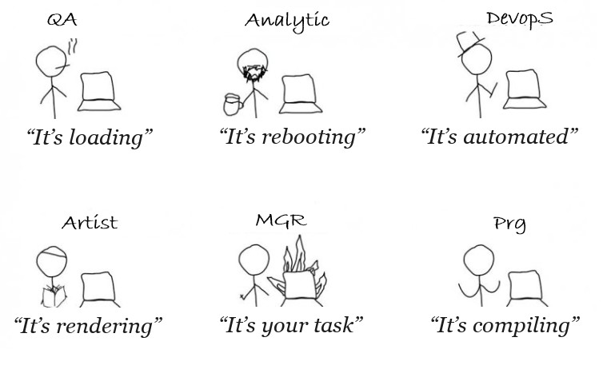

In std::move nobody moves anywhere
In undefined behavior the behavior is quite well-defined — it just crashes the game
In GameObject there's neither a game nor an object, only bugs and a pile of anti-patterns
The memory leak detector leaks itself
There's as much physics in PhysicsEngine as in the tale of the Gingerbread Man
Out of 8 working hours, 6 go into trying to build after merging with stable.
In ProfileMode everything lags except the profiler
In the retrospective meeting they discuss why everything is bad, but leave it as is.
The debug build has fewer bugs than the release one and a higher FPS
The cross-platform build of the game compiles only on one machine, in a particular corner of the office, on one compiler, under a full moon
In LevelStreaming the whole world loads at once
The only game-related thing about C++ is the ability to play on the developers' nerves
Refactored legacy code starts taking revenge a week later
The tech debt backlog has more debt than features. But features get done, debt doesn't
In EntityComponentSystem there's neither a system, nor entities, nor components — only data chaos and hundreds of unrelated calls
QA reports a bug that describes everything except how to reproduce it.
Code review feedback arrives when you've already pushed to the release branch.
The tech lead's "beautiful optimization" usually drops the FPS.
In MVP there's neither minimal, nor viable, nor a product
In the fire of a deadline everything dies, including the mood in the team.
In burnout prevention week there's neither rest nor prevention — just another sprint.
In the release build nothing works except the bugs
If "Don't worry, it's priority 3" flies in — it's usually already a fire on prod.
The cert submission build usually contains more than 200 bugs hacked around with crutches
TRC/XR/LOT has more rules than the Criminal Code has articles (Sony has 450)
In Xbox GDK, GDK stands for "where's the Docs, Karl?"
A cert blocker bug appears only for Sony testers under a full moon, but it had to be fixed yesterday.
In server tick the server is supposed to tick, but the tick starts at your place.
The prediction system predicts nothing, but breaks everything.
In navmesh everything is fine until the AI decides to walk into a wall.
In the smart object system the objects are smarter than the characters.
In the decision making system there are no decisions, only if-else.
Finite State Machines can hang, get stuck, stumble, float and fall
A "small level change" usually means 200 drag-and-drops and 500 new bugs.
"It's just adding a button" usually has 3 days of UI hell and a conflict with the renderer buried in it.
"why is it so expensive?" reviews come from people who didn't buy the game
"it's all Unity's fault!" reviews come even if the game is written on your own engine.
In the audio system there's always a sound nobody hears (the sound of silence).
An FMOD event triggers either never or always, and is described by a float field
The sound designer usually sends tasks like "the sound needs to be a bit more alive" with a screenshot — that's the whole task, for the record.
The Widget UI system renders nothing, but takes up 40% of the CPU.
One-click deploy works only for the person who wrote it, on their machine, under a full moon.
In the Unique string ID system the string IDs duplicate and the strings get lost.
A non-latin font usually breaks the whole UI.
In RTL text everything displays on the right... and at the bottom.
In voiceover the actor speaks for 5 seconds and the character stays silent for 10.
It's better not to argue with the producer's email "it's not a bug, it's just the translation".
In template metaprogramming there's neither meta nor programming — only a 3-screen wall of compile errors.
In the task "let's add std::any to X" we lost the type, the debuggability and the performance.
The engine code has the most comments starting with // TODO.
Virtual destructors kill not objects, but performance and sometimes the build.
In third-party libs everything is incompatible, especially the licenses.
assert(false && "should not happen") happens a couple of times a day.
The most frequent resolution when closing a bug is CNRD (Can't reproduce in debug)
In the save state pattern you can only lose a few hours of your life
In constexpr you compile at compile time
"Let's rewrite it for ECS" usually ends with your engine broken, but at least there's a 60-slide presentation.
"We use our own memory arena." Now nobody knows why it crashes — not even Valgrind.
"We enabled C++20 support." The prod build now doesn't compile on any of the compilers
RAII solves everything, but creates cycles nobody can fix
Encapsulation is good, but a public field saves the release 10 minutes before the deadline
Signals and slots are convenient, but now the bugs reproduce randomly
We don't use goto, but an 800-line switch-case is fine
If a bug is impossible — it'll happen anyway. In the release build with a different stack trace
Lines marked //TMP live longer than you work at the studio
The closer the milestone, the more often neutrinos fly through the memory sticks and break bits
If a bug can't be reproduced — players will reproduce it every time.
A feature made the night before a milestone makes it into the trailer.
If you change something "in just one place" — it breaks in three others.
Every refactoring deletes a little piece of history
You know it could be better. But nobody asks for better.
We moved the build to CI, now it breaks on its own without any programmer's involvement
Someday you'll finish the documentation
Anything you spend more than a week on will be replaced by assets from the marketplace.
A ninja hotfix breaks two stable branches.
Any speedup of loading leads to three new tasks from the artists
Nobody knows how that legacy code works. But if you touch it — the whole build breaks.
Everything that could be inherited incorrectly has already been inherited
If someone said "I cleaned up the code" at the meeting — get ready for a week of Heisenbugs
A feature budgeted for half a year will be disabled before release due to "low priority".
The dumber the idea, the higher the chance it makes it into the release.
Tech debt is just another polite name for someone's unfixed bugs.
If the build suddenly became stable, it means you built debug
You can't fire the person who wrote this hell. Because he left on his own — two years ago.
Every "simple fix" from an artist takes a day away from a programmer
You rewrote the event system to make it understandable. Now nobody understands it, including you.
When they tell you "nothing critical" — it's always a "priority 3" task, see item 22.
If a manager asks for it "real quick", it means he's already sold the feature to the bosses.
The mgr/prg ratio correlates with the probability of shipping a product rather than a game. (Subtle, but mgrs take offense)
The artist doesn't know how the shader works. The game designer doesn't know how the balance works. The producer doesn't know how the game works.
No bugs are as scary as a feature described in the kitchen with the words "you'll figure out what I meant yourself".
If the build compiles and launches — that doesn't mean it works
You did everything as written in the task. But the one who did it all "by eye" was right. Because he got distracted less.
If a patch ships on Friday. Then over the weekend you'd better get far away and turn off your phone.
Light gets through concrete, bullets don't. That's what physics in games is.
The whole project rests on 3 people the management doesn't listen to.
"Retro style" is when the artist can't do lightmaps and a render programmer does their job.
The more you say it's a bad idea, the higher the chance of getting it as a task.
The probability of being fired is directly proportional to the reliability of the system you built.